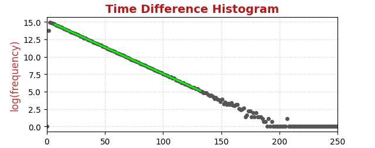

MCA Data Server Reference
COUNTER
USB driver
Data structures
ARM Data structures
API
Counter Data Structure: arm_time_histogram
Summary
The counter can prepare a histogram of the time difference between successive events. This feature is useful to ascertain that events truly arrive in a random fashion. More importantly, it can be used to measure count rates precisely, without making assumptions about the dead time of the event processing.
Time differences are measured with a resolution of 4/3µs=1.333µs. The histogram memory is 1024 bins long. The practical range of measuring count rates this way extends from 1kcps to much beyond 100kcps.
Theory of operation
If the incoming pulse that are to be counted are truly random in time and are not correllated with each other, then the time differences between subsequent pulses is eponentially distributed with a probability density function (pdf) as follows: pdf=exp(-t/cr) where cr=count_rate.
|  |
One can extract the count rate from a linear fit in a semi-logarithmic plot of time difference histogram. The slope equals -1/cr.
Associated commands
Set arm_ctrl["user"]["acq_type"]=1 to activate acquistion of a time histogram.
To read the time histogram use the regular read_histogram command:
cmd={"name": "arm_histogram", "dir": "read"}
To clear the histogram set arm_ctrl["user"]["clear_histogram"]=1 and arm_ctrl["user"]["clear_statistics"]=1
For arm_time_histogram, there are 1040 data in use. All register data are 32-bit integers.
| MCA registers and fields | |
|---|---|
| Register number and field name | Description |
| HR0[0]: run | Histogram acquisition happens while this bit is set. |
| HR1: run_time | Run time measured by wall clock; 1LSB=1.365ms. |
| HR2: dead_time | Dead time measured by wall clock; 1LSB=1.365ms. |
| HR3: events | Number of acquired events |
| HR4: live_time | Computed live time, in milliseconds |
| HR5: count_rate | Computed count rate, dead-time corrected, in milli-cps |
| HR6: live_time_ratio | Sample / background measuring time; × 1e6. Only used by arm_diff. |
| HR14: wall_clock_start | Wall clock reading at start time in 1.365333ms units |
| HR15: live_time_max | Requested live time for the data acquisition, in milliseconds |
| HR16 to HR1039: histogram | The 1K×32-bit time histogram. |